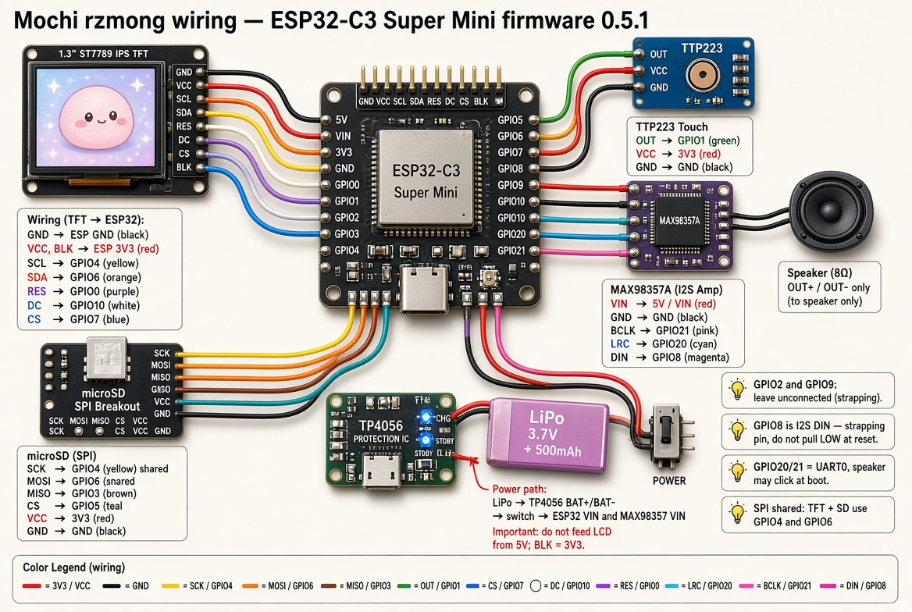

Model yang didukung firmware 0.5.5
ESP32-C3 Super Mini + LCD ST7789 1.3" 240×240 modul GMT130-V1.0 (PCB 27.78×39.22 mm, SPI 7 pin: GND VCC SCL SDA RES DC BLK — tanpa CS).
- DIY terinspirasi Dasai Mochi — bukan produk resmi / clone berlisensi.
- LCD 1.54" (PCB ~32 mm) tidak muat case ini — jangan pakai tanpa redesign STL.
- Jangan pakai ESP32-WROOM / DevKit besar.
Skema lama (TFT RST=GPIO8, SD MISO=GPIO2, I2S DIN=GPIO9) salah untuk firmware ini. Diagram di bawah sudah pin 0.5.5 (pin sama sejak 0.5.1). Pin ini bukan boot-safe.
🛒 Komponen
| Bagian | Spesifikasi |
|---|---|
| Otak | ESP32-C3 Super Mini, flash 4 MB, USB-C native |
| Layar | ST7789 IPS 1.3" 240×240 GMT130-V1.0, SPI 7 pin tanpa CS. PCB 27.78×39.22 mm, kaca 26.16×29.22 mm (tebal ≤1.5 mm), area aktif 23.40×23.40 mm, lubang Ø2 mm 2.5 mm dari tepi (jarak 22.78×34.22 mm) |
| Baterai | LiPo 3.7V pipih 400–1000 mAh (diagram tipikal 1000 mAh; cek ketebalan vs case, bukan 18650) |
| Charger | TP4056 + proteksi DW01/8205A |
| Saklar | On/Off memutus VIN beban |
| Sentuh | TTP223 (HIGH saat sentuh) |
| Suara | MAX98357A I2S + speaker 4–8Ω tipis — bukan PAM8403 |
| Kapasitor amp | ~470 µF / ≥10 V di VIN MAX98357 ke GND |
| SD | Modul microSD SPI native 3.3V + kartu FAT32 — bukan reader 5V |
| Case | Kulit luar + tatakan GMT130 (jendela 23.6×23.6 mm) — STL resmi di bawah |
Varian PCB carrier (opsional)
Semua modul di satu PCB etsa tangan 38.5×36 mm (satu sisi, FR4 1.6 mm, THT). Pin sama. Varian kabel lepas di atas tetap didukung. Part yang berbeda:
| Bagian | Varian PCB |
|---|---|
| Case | case_luar_lcd_23_40mm_pcb.stl (grille speaker, slot saklar) + tatakan_GMT130_fit_pcb.stl (2 tiang M2) |
| Speaker | 15×11×3.5 mm persegi, 4–8Ω (bulat 20 mm tidak muat) |
| Kapasitor amp | 470 µF 10 V Ø6.3×11, tegak (Ø8 tidak muat) |
| SD | Modul micro SD 3.3 V native kecil ±18.5×20 mm, 6 pin (shield Wemos tidak muat; banyak modul mini butuh 5 V — cek dulu) |
| Baterai | LiPo 501640 (40×16×5 mm), dimasukkan dengan cara diputar |
| Saklar | Saklar geser siku, di luar PCB (kabel), lewat slot baru di dinding belakang |
| Baut | 2× M2×16 dari bawah tatakan + mur M2 / standoff di atas PCB |
| Kabel | 26 AWG untuk GND gabungan dan SW.B; Kynar 30 AWG untuk jumper JP3/JP4 |
Pin firmware 0.5.5
Ikuti tabel dan diagram ini saat solder. Gambar resmi firmware 0.5.5 — sama dengan MochiRzmong.h + User_Setup_ST7789.h.

LCD GMT130 (7 pin) tidak punya kaki CS: biarkan GPIO7 kosong, firmware tetap mendefinisikan CS=GPIO7 (tidak mengganggu). Sambungkan hanya jika modulmu ada CS. Kabel LCD disolder langsung ke pad (tanpa pin header). GPIO2 dan GPIO9 tetap kosong. Saklar di jalur TP OUT+, elko ~470 µF di VIN–GND MAX. SD di foto adalah shield SPI, diberi 3V3 — bukan reader 5V.
| Modul | Sinyal | GPIO | Catatan |
|---|---|---|---|
| Touch | OUT | 1 | TTP223 HIGH saat sentuh |
| SD | SCK | 4 | SPI berbagi SCK/MOSI dengan TFT. Modul harus 3.3V native. |
| MOSI | 6 | ||
| MISO | 3 | ||
| CS | 5 | ||
| TFT | SCLK | 4 | RST=0. BLK → 3V3. Warna BGR. |
| MOSI / SDA | 6 | ||
| CS | 7 (GMT130: tidak ada, kosong) | ||
| DC | 10 | ||
| RST / RES | 0 | ||
| MAX98357 | BCLK | 21 | GPIO8 = strapping. GPIO20/21 = UART0 — log boot bisa “plok”. Pakai USB CDC. Tambah 470 µF di VIN amp. |
| LRC / WS | 20 | ||
| DIN | 8 | ||
| Strapping | — | 2, 9 | Biarkan tidak terhubung |
ESP32-C3 Super Mini (firmware 0.5.5)
┌───────────────────┐
3V3 ─│ 3V3 GND │─ GND bersama
TFT MOSI ─│ GPIO6 GPIO4 │─ TFT SCLK + SD SCK
TFT CS* ─│ GPIO7 GPIO0 │─ TFT RST
TFT DC ─│ GPIO10 GPIO5 │─ SD CS
SD MISO ─│ GPIO3 GPIO1 │─ TTP223 OUT
I2S DIN ─│ GPIO8 GPIO20│─ I2S LRC / WS
I2S BCLK ─│ GPIO21 GPIO2 │─ (kosong)
│ GPIO9 │─ (kosong)
└───────────────────┘
VIN ← saklar ← TP4056 OUT+
* GMT130 7 pin tanpa CS: GPIO7 kosong
⚡ Power
Beban tetap terpasang saat charging membuat terminasi TP4056 kurang akurat. Ideal: saklar memutus beban saat charge.
LiPo → TP4056 (+DW01) → Saklar → VIN ESP32 + VIN MAX98357 ESP32 3V3 → LCD + SD + TTP223 GND bersama LCD BLK → 3V3 (bukan 5V) MAX98357 VIN — kapasitor ~470 µF ke GND, sedekat mungkin ke modul
📥 Unduh case 3D (STL)
- case_luar_lcd_23_40mm.stl — kulit luar (35.0 MB)
- tatakan_GMT130_fit.stl — dudukan LCD GMT130 27.78×39.22 mm, pin di bawah (25.9 MB) — pakai ini
- tatakan_lcd_23_40mm.stl — legacy, dibuat dengan asumsi ukuran 23×40 mm yang salah; LCD GMT130 longgar (28.8 MB)
Varian PCB carrier (pakai keduanya bersama, jangan dicampur dengan file di atas):
- case_luar_lcd_23_40mm_pcb.stl — kulit luar + grille speaker, slot saklar, pad tumpuan (35.1 MB)
- tatakan_GMT130_fit_pcb.stl — tatakan GMT130 + 2 tiang M2 (23.8 MB)
- Artwork etsa PCB + urutan rakit: pcb/

Asumsi: PCB 1.6 mm, kaca ≤1.5 mm, sambungan solder di belakang pin ≤2 mm. Belum dicetak uji — cetak tatakan dulu dan cek pas sebelum merakit. Detail: case/README.md.
Folder: github.com/rz7mong/mochi-rzmong/tree/main/case
Cetak PLA, layer 0.2 mm, infill 15–20%.
🔊 Speaker & amp
Jangan sambung speaker ke GPIO — hanya lewat MAX98357 OUT+/OUT−. Bunyi “plok” saat boot bisa muncul karena UART0 di GPIO20/21.
Wajib: kapasitor elektrolit ~470 µF, ≥10 V antara VIN MAX98357 dan GND (kaki + ke VIN). Tanpa ini amp mudah ceklek saat bass.
💾 Kartu SD
Pakai breakout SPI yang memang 3.3V. Modul “SD reader 5V” / converter 5V ke 3.3V sering gagal di bus yang sama dengan TFT.
Format FAT32. MISO = GPIO3, CS = GPIO5. Jangan GPIO2.
🧩 Urutan rakit
- Cetak kulit luar + tatakan_GMT130_fit.stl (STL di atas).
- Solder kabel langsung ke pad LCD (tanpa pin header), keluar ke belakang, sambungan ≤2 mm. BLK ke 3V3, CS tidak ada.
- Masukkan LCD ke tatakan dari atas, pin di bawah (tepi pin di lantai tatakan), kaca menghadap jendela. Firmware 0.5.5 default rotasi 2 → gambar tegak.
- Solder urutan: GND bersama → 3V3 → SPI layar → SPI SD → sentuh GPIO1 → I2S 21/20/8.
- Speaker ke OUT amp. Kapasitor 470 µF di VIN amp. Jangan pakai GPIO2 atau GPIO9.
- TP4056 berproteksi → saklar → VIN.
- Varian PCB carrier: ikuti urutan di pcb/README.md (lem speaker/TTP223/saklar → LiPo diputar masuk → PCB naik lalu geser → tatakan dari bawah → 2 baut M2), lalu lanjut ke flash.
- Flash firmware 0.5.5 dari halaman instalasi (Erase NVS aman; SD tidak terhapus).
- Wi-Fi
rzmong mochi/rzmong123→http://192.168.4.1/. Ganti sandi AP di firmware sebelum dipakai di tempat umum.
⚠️ Troubleshooting rakit
| Layar putih/hitam | RST=0, DC=10, SCLK=4, MOSI=6, BLK=3V3 (CS=7 hanya jika modul punya kaki CS) |
| Gambar terbalik | Default 0.5.5 = rotasi 2 (LCD pin di bawah). Menu LCD → Rotasi layar 2× untuk membalik 180° |
| SD gagal | FAT32, modul 3.3V native, MISO=3, CS=5; bukan GPIO2 |
| Tidak boot / aneh | GPIO2 atau GPIO9 tersolder — cabut |
| Tidak ada suara | DIN=8, speaker ke OUT amp, cek 470 µF |
| Plok saat boot | UART0 di 20/21 + strapping GPIO8 — uji di hardware |
| LCD 1.54" longgar | Salah model — case ini untuk 1.3" GMT130 27.78×39.22 mm |
| LCD 1.3" goyang di tatakan | Masih pakai tatakan lama (23×40 mm). Cetak tatakan_GMT130_fit.stl |